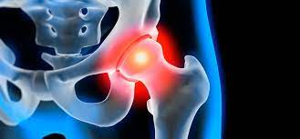

Ejercios para Artrosis de Cadera

¿Qué es la Artrosis de Cadera?
¿Qué es la Artrosis de Cadera? La artrosis es una enfermedad articular degenerativa que causa daño progresivo del cartílago articular y de las estructuras circundantes. La artrosis se puede producir en varias articulaciones, siendo la cadera la segunda articulación más frecuentemente afectada después de la rodilla.
Síntomas de la Artrosis de Cadera
El síntoma principal que produce la artrosis de cadera es el dolor. Normalmente se localiza principalmente en la región de la ingle. La localización del dolor se puede extender y se pueden notar molestias en la cara anterior del muslo e incluso en la rodilla. En otras ocasiones puede notarse dolor en la nalga.
Los síntomas más habituales de la artrosis de cadera son:
- Dolor en la ingle con posibilidad de irradiación hacia la pierna.
- Rigidez articular por las mañanas.
- Dificultad a la hora de caminar.